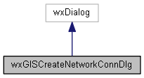

|
|
Version: 0.6.0 |


wxGISCreateNetworkConnDlg Class Reference
The create network connection dialog. More...
#include <createnetworkconndlg.h>
Inheritance diagram for wxGISCreateNetworkConnDlg:

Collaboration diagram for wxGISCreateNetworkConnDlg:

Protected Member Functions | |
| void | OnSaveBtnClick (wxCommandEvent &event) |
Detailed Description
The create network connection dialog.
The documentation for this class was generated from the following files:
- /home/bishop/work/projects/nextgismanager/include/wxgis/remoteserverui/createnetworkconndlg.h
- /home/bishop/work/projects/nextgismanager/src/remoteserverui/createnetworkconndlg.cpp
- Generated on Fri Sep 26 2014 01:11:01 for ngm by
 1.8.6
1.8.6